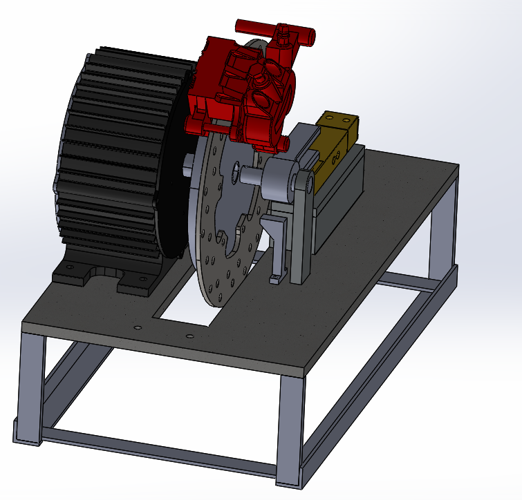
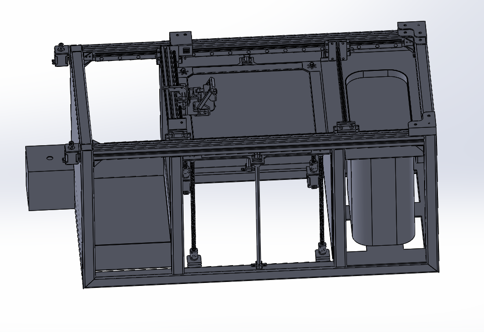

-

Electric Vehicle Design
Collaborated with the R&D team to design and prototype a 3-wheeler electric vehicle using SolidWorks, Autodesk Fusion, and CATIA. Managed EBOM and MBOM within ERP systems, optimized manufacturing processes, and implemented DFMEA for quality assurance. Achieved significant efficiency gains, cost savings, and delivered a market-ready vehicle that met industry standards.
Skills used: SolidWorks, Ansys, 3D Experience, ERP, GD&T.
-

Class A Surfaces and Thermoforming Mold Design
I specialize in crafting Class A surfaces, ensuring high-quality aesthetics and functionality for products in various industries. My expertise extends to designing wooden molds for thermoforming techniques, focusing on precision engineering to ensure optimal part manufacturing. This involves meticulous surface modeling, detailing, and material analysis to create flawless finishes and effective thermoforming molds.
Skills used: Autodesk Fusion, Alias, Gcode, GD&T.
-
.png)
3D Printer Design and Manufacturing
Experience in designing Cartesian and Core XY DIY 3D printers. Utilized an Arduino Mega board with Marlin software for control.
Skills used: SolidWorks, Arduino, Marlin, GD&T.
-

Testing Machine Design
Designed a testing machine to evaluate the performance of brushless DC motors, controllers, and battery packs. Used load cells, hall sensors, and temperature sensors, with data monitored using Arduino.
Skills used: SolidWorks, Python, Arduino, C++, GD&T.
-

Class A Surface Design for Electric Scooter
Designed Class A surfaces for an electric scooter, meeting the challenge of avoiding visible screws on the surface while ensuring the chassis remains visible.
Skills used: Autodesk Fusion, Alias, GD&T, Gcode.
-

Machine Design
Experience in designing a binder jetting printer, a novel design.
Skills used: SolidWorks, Python, Arduino, C++, GD&T.
Projects